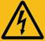
Indicates a part exposed to high voltage. This symbol warns operators that both direct and indirect contact with the power grid is fatal. Such areas include hazardous voltage points or protective power supply covers that may be removed during maintenance.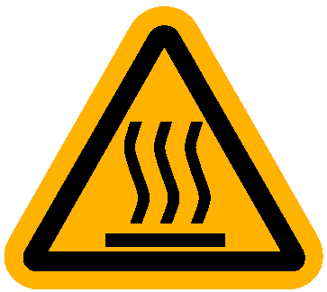
Indicates overheating: Burned fingers when handling the parts, Wait one-half hour after switching off before handling parts.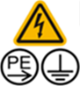
: High touch current warning labels: This identifier attached to the protection ground terminal nearby, Warn products have high touch current, Connect to earth before connecting to supply, To avoid danger of electric shock.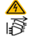
: Multiple power sources warning labels: when the device is powered off, you must disconnect all power sources.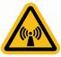
Indicates that microwave emission. The symbol is attached near the output socket of the transmitter power amplifier or antenna socket of the transmitter combiner to indicate RF radiation. Do not tamper with the transmitter output feeder or antenna feeder connector when the transmitter is on. Turn off the transmitter before disconnecting the feeder connector or working near the transmit antenna.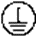
indicates protection earthing. This symbol is attached next to a protection ground terminal next to grounded equipment and an external ground system. An equipment ground cable is connected to an external ground bar through the protection ground terminal.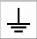
indicates equipotential bonding. This symbol is found with equipotential terminals inside equipment.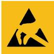
indicates electrostatic discharge. This symbol is used in all electrostatic sensitive areas. Before operating equipment in these areas, wear ESD gloves or an ESD wrist strap.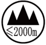
indicates that the equipment is safe to use in altitudes below 2000 m (6561.6 ft.).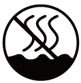
indicates that the equipment is not safe to use in tropical climates.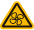
:Moving fan blade: Keep body parts away from fan blades.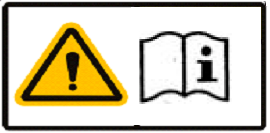
: Prompts users to read the instruction manual.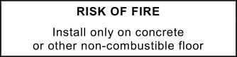
: This label attached to products visible position, is used to indicate that equipment intended only for use in fixed installations and intended to be floor standing on a non-combustible surface need not be provided with a fire enclosure bottom.